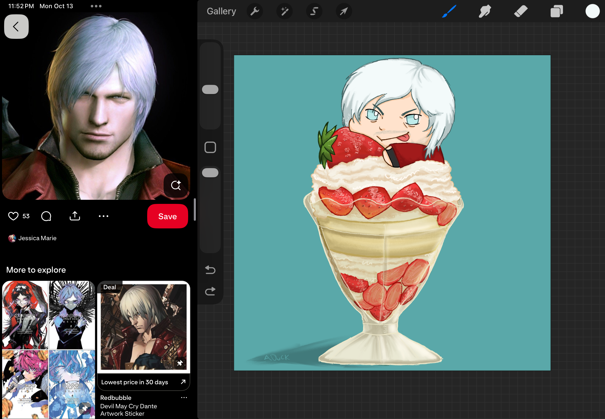

My Recent Drawings!!

This is some of my most recent art! and It's some of the work I am really proud of!!!
The pictures will most likely change in the future if I get around to it
Older Work
Here are some of my older drawings!
Although my skills have gotten a lot better I still really like these drawngs and I am proud that I drew them. And as time passes and I get better this section will grow a lot more and hopefully I can figure out a better way to format it.
Art Process

This is the process my art usually follows! I start with a sketch then I clean it up a bit.
You can also see how I use refrences while I draw to make it more accurate!
The final drawing is the First on this page!